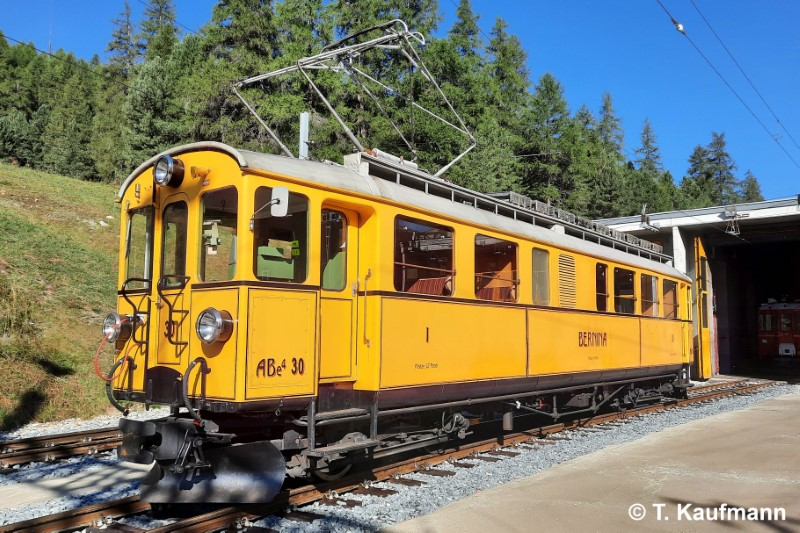
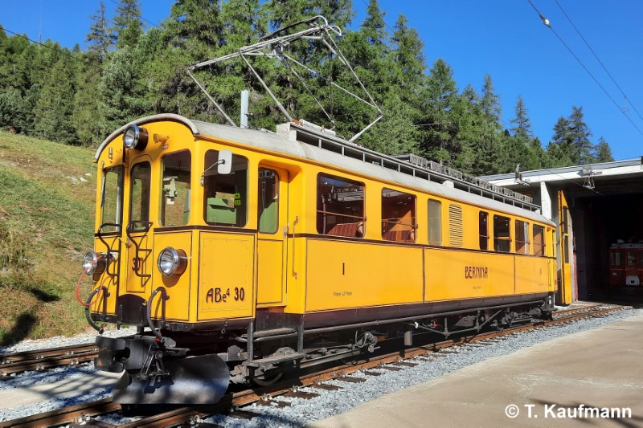

| Tfz bremst (BB): |
Einreihung hinter Zuglok, BG 31 t, V max. 55 km/h, Reihe R/D
Hauptleitung (Vakuum) und Speiseluft verbinden (Depoteinspeisung)
Einreihungsvorschriften betreffend reduzierter Zughakenlast beachten
Schlepp darf nur durch instruiertes Personal eingerichtet werden |
| Tfz bremst (StN): |
Einreihung beliebig, BG 31 t, V max. 55 km/h, Reihe R/D
Hauptleitung (Vakuum) und Speiseluft verbinden (Depoteinspeisung)
Einreihungsvorschriften betreffend reduzierter Zughakenlast beachten
Schlepp darf nur durch instruiertes Personal eingerichtet werden |
| Tfz ungebremst: |
Nur im Ausnahmefall zulässig |
 
